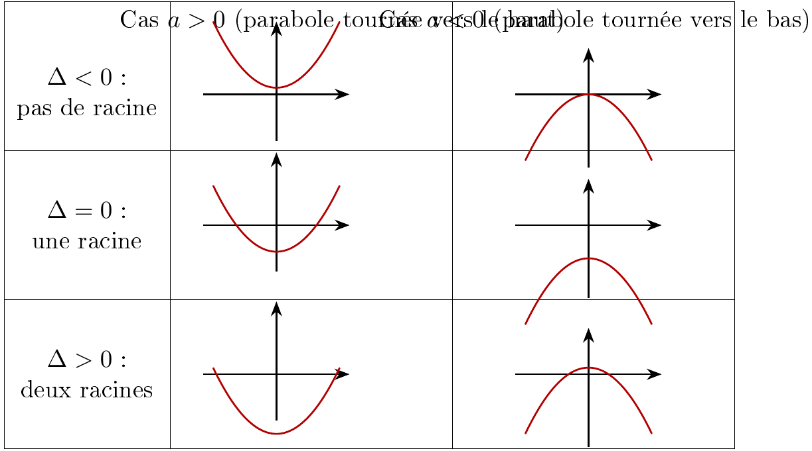
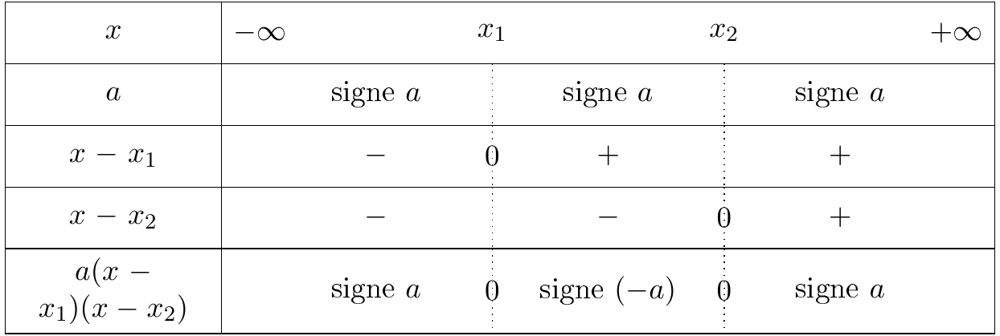
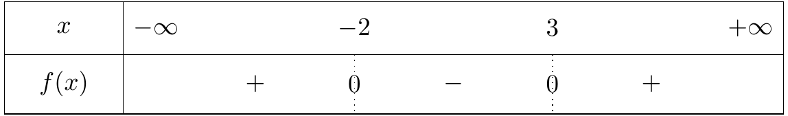

Chapitre 2 : Équation et inéquation du second degré
Première spécialité · Chapitre 2 — Équation et inéquation du second degré · cours de Frederik de Peyrelongue
I. Équation du second degré
Une équation du second degré (trinôme du second degré) est une équation du type
avec $a$, $b$ et $c$ trois nombres réels, et $a$ non nul.
On appelle discriminant de l'équation $ax^{2}+bx+c=0$ le nombre réel
Pour tout $x$ réel, on a
On appelle cette forme la forme canonique.
Preuve :
La forme canonique de $f(x)=x^{2}+8x+7$ est
L'équation $ax^{2}+bx+c=0$ admet :
- si $\Delta<0$ : aucune solution réelle ;
- si $\Delta=0$ : une solution réelle $x_{0}=-\dfrac{b}{2a}$ ;
si $\Delta>0$ : deux solutions réelles distinctes
\[ x_{1}=\frac{-b+\sqrt{\Delta}}{2a} \qquad x_{2}=\frac{-b-\sqrt{\Delta}}{2a} . \]
De plus, on peut factoriser l'expression du second degré sous la forme
On peut résumer le théorème précédent avec le tableau suivant :

Preuve :
1er cas : $\Delta=0$.
Résoudre $ax^{2}+bx+c=0$, c'est résoudre
2ème cas : $\Delta<0$.
Résoudre
Mais $\Delta<0\iff-\Delta>0\iff-\dfrac{\Delta}{4a^{2}}>0$ ; on a donc la somme de deux nombres strictement positifs : l'équation n'a pas de solution.
3ème cas : $\Delta>0$.
on a une différence de deux carrés que l'on peut factoriser !
Un produit de facteurs est nul si, et seulement si, l'un des facteurs est nul !
II. Signe du trinôme
- Si $\Delta<0$, alors $\left(x+\dfrac{b}{2a}\right)^{2}-\dfrac{\Delta}{4a^{2}}>0$ et donc le signe de $ax^{2}+bx+c$ est le signe de « $a$ ».
- Si $\Delta=0$, alors $ax^{2}+bx+c=a\left[\left(x+\dfrac{b}{2a}\right)^{2}\right]$ est du signe de « $a$ » pour $x\neq-\dfrac{b}{2a}$.
- Si $\Delta>0$, alors $ax^{2}+bx+c=a(x-x_{1})(x-x_{2})$ : supposons que $x_{1}<x_{2}$.

On considère la fonction trinôme $f(x)=x^{2}-x-6$. On a $\Delta=25$, donc le trinôme admet deux racines réelles distinctes, qui sont $-2$ et $3$.
Comme $a=1>0$, on a le tableau de signes suivant.

III. Application : résolution d'inéquation
Méthode : pour résoudre une inéquation, on se ramène à une comparaison à zéro et on étudie alors le signe de l'expression algébrique.
Résoudre
On n'a plus qu'à étudier le signe du trinôme $7x^{2}-5x+3$.
Le trinôme n'a pas de racine. Le discriminant est strictement négatif, le signe du trinôme est donc celui de « $a$ ». Le trinôme est donc strictement positif.
On peut conclure que l'ensemble de solution de l'inéquation est vide.
IV. Produit et somme des racines
Si le trinôme admet deux racines, alors la somme $S$ et le produit $P$ des racines vérifient :
Preuve : soit $ax^{2}+bx+c$ un trinôme qui admet deux racines $x_{1}$ et $x_{2}$ ; on a alors
On développe la forme factorisée :
On a bien, par identification, $aP=c$ et $-aS=b$, donc $P=\dfrac{c}{a}$ et $S=-\dfrac{b}{a}$.
on a $x_{1}=-2$ et $x_{2}=3$ :
Deux nombres réels ont pour somme $S$ et pour produit $P$ si, et seulement si, ils sont solutions de l'équation
Preuve : soient $u$ et $v$ deux nombres réels de somme $S=u+v$ et de produit $P=uv$.
L'équation $x^{2}-Sx+P=0$ admet deux solutions, car $\Delta\geqslant 0$. En effet,
On a alors
$u$ est donc solution de l'équation $x^{2}-Sx+P=0$.
De même,
$v$ est donc solution de l'équation $x^{2}-Sx+P=0$.
Donc $u$ et $v$ sont les deux solutions de $x^{2}-Sx+P=0$.
Réciproquement, soient $u$ et $v$ les deux solutions de $x^{2}-Sx+P=0$.
On a donc $\Delta=S^{2}-4P$. Les solutions sont
On calcule la somme
Le produit